You can use the RHEL 8 web console to configure physical and virtual storage devices. This chapter provides instructions for these devices:
- Mounted NFS
- Logical Volumes
- RAID
- VDO
The RHEL 8 web console has been installed.
For details, see Installing the web console.
The RHEL 8 web console enables you to mount remote directories using the Network File System (NFS) protocol.
NFS makes it possible to reach and mount remote directories located on the network and work with the files as if the directory was located on your physical drive.
Prerequisites
- NFS server name or IP address.
- Path to the directory on the remote server.
The following steps aim to help you with connecting a remote directory to your file system using NFS.
Prerequisites
- NFS server name or IP address.
- Path to the directory on the remote server.
Procedure
Log in to the RHEL 8 web console.
For details, see Logging in to the web console.
- Click Storage.
Click + in the NFS mounts section.
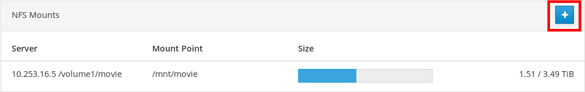
- In the New NFS Mount dialog box, enter the server or IP address of the remote server.
- In the Path on Server field, enter the path to the directory you want to mount.
- In the Local Mount Point field, enter the path where you want to find the directory in your local system.
- Select Mount at boot. This ensures that the directory will be reachable also after the restart of the local system.
Optionally, select Mount read only if you do not want to change the content.
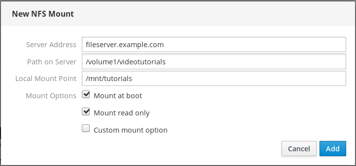
- Click Add.
At this point, you can open the mounted directory and verify that the content is accessible.

To troubleshoot the connection, you can adjust it with the Custom Mount Options.
The following section provides you with information on how to edit an existing NFS mount and shows you where to add custom mount options.
Custom mount options can help you to troubleshoot the connection or change parameters of the NFS mount such as changing timeout limits or configuring authentication.
Prerequisites
- NFS mount added.
Procedure
Log in to the RHEL 8 web console.
For details, see Logging in to the web console.
- Click Storage.
- Click on the NFS mount you want to adjust.
If the remote directory is mounted, click Unmount.
The directory must not be mounted during the custom mount options configuration. Otherwise the web console does not save the configuration and this will cause an error.

Click Edit.
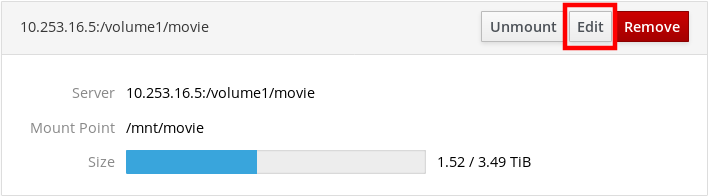
- In the NFS Mount dialog box, select Custom mount option.
Enter mount options separated by a comma. For example:
-
nfsvers=4— the NFS protocol version number -
soft— type of recovery after an NFS request times out -
sec=krb5— files on the NFS server can be secured by Kerberos authentication. Both the NFS client and server have to support Kerberos authentication.
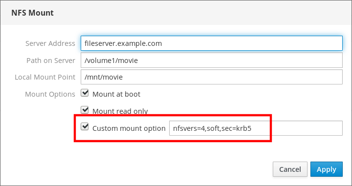
For a complete list of the NFS mount options, enter
man nfsin the command line.-
- Click Apply.
- Click Mount.
Now you can open the mounted directory and verify that the content is accessible.
Redundant Arrays of Independent Disks (RAID) represents a way how to arrange more disks into one storage.
RAID protects data stored in the disks against disk failure with the following data distribution strategies:
- Mirroring — data are copied to two different locations. If one disk fails, you have a copy and your data is not lost.
- Striping — data are evenly distributed among disks.
Level of protection depends on the RAID level.
The RHEL web console supports the following RAID levels:
- RAID 0 (Stripe)
- RAID 1 (Mirror)
- RAID 4 (Dedicated parity)
- RAID 5 (Distributed parity)
- RAID 6 (Double Distributed Parity)
- RAID 10 (Stripe of Mirrors)
Before you can use disks in RAID, you need to:
- Create a RAID.
- Format it with file system.
- Mount the RAID to the server.
The RHEL 8 web console is running and accessible.
For details, see Installing the web console.
This procedure aims to help you with configuring RAID in the RHEL 8 web console.
Prerequisites
- Physical disks connected to the system. Each RAID level requires different amount of disks.
Procedure
- Open the RHEL 8 web console.
- Click Storage.
Click the + icon in the RAID Devices box.
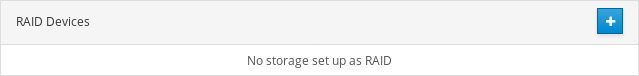
- In the Create RAID Device dialog box, enter a name for a new RAID.
- In the RAID Level drop-down list, select a level of RAID you want to use.
In the Chunk Size drop-down list, leave the predefined value as it is.
The Chunk Size value specifies how large is each block for data writing. If the chunk size is 512 KiB, the system writes the first 512 KiB to the first disk, the second 512 KiB is written to the second disk, and the third chunk will be written to the third disk. If you have three disks in your RAID, the fourth 512 KiB will be written to the first disk again.
Select disks you want to use for RAID.

- Click Create.
In the Storage section, you can see the new RAID in the RAID devices box and format it.
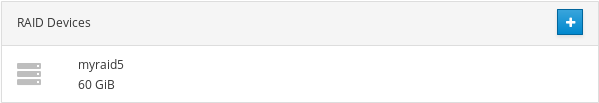
Now you have the following options how to format and mount the new RAID in the web console:
This section describes formatting procedure of the new software RAID device which is created in the RHEL 8 web interface.
Prerequisites
- Physical disks are connected and visible by RHEL 8.
- RAID is created.
- Consider the file system which will be used for the RAID.
- Consider creating of a partitioning table.
Procedure
- Open the RHEL 8 web console.
- Click Storage.
- In the RAID devices box, choose the RAID you want to format by clicking on it.
- In the RAID details screen, scroll down to the Content part.
Click to the newly created RAID.
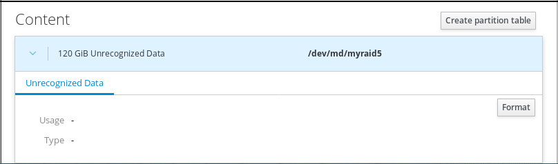
- Click the Format button.
In the Erase drop-down list, select:
- Don’t overwrite existing data — the RHEL web console rewrites only the disk header. Advantage of this option is speed of formatting.
- Overwrite existing data with zeros — the RHEL web console rewrites the whole disk with zeros. This option is slower because the program has to go through the whole disk. Use this option if the RAID includes any data and you need to rewrite it.
- In the Type drop-down list, select a XFS file system, if you do not have another strong preference.
- Enter a name of the file system.
In the Mounting drop down list, select Custom.
The Default option does not ensure that the file system will be mounted on the next boot.
- In the Mount Point field, add the mount path.
-
Select Mount at boot.

Click the Format button.
Formatting can take several minutes depending on the used formatting options and size of RAID.
After successful finish, you can see the details of the formatted RAID on the Filesystem tab.

- To use the RAID, click Mount.
At this point, the system uses mounted and formatted RAID.
RAID requires formatting as any other storage device. You have two options:
- Format the RAID device without partitions
- Create a partition table with partitions
This section describes formatting RAID with the partition table on the new software RAID device created in the RHEL 8 web interface.
Prerequisites
- Physical disks are connected and visible by RHEL 8.
- RAID is created.
- Consider the file system used for the RAID.
- Consider creating a partitioning table.
Procedure
- Open the RHEL 8 web console.
- Click Storage.
- In the RAID devices box, select the RAID you want to edit.
- In the RAID details screen, scroll down to the Content part.
Click to the newly created RAID.
- Click the Create partition table button.
In the Erase drop-down list, select:
- Don’t overwrite existing data — the RHEL web console rewrites only the disk header. Advantage of this option is speed of formatting.
- Overwrite existing data with zeros — the RHEL web console rewrites the whole RAID with zeros. This option is slower because the program has to go through the whole RAID. Use this option if RAID includes any data and you need to rewrite it.
In the Partitioning drop-down list, select:
- Compatible with modern system and hard disks > 2TB (GPT) — GUID Partition Table is a modern recommended partitioning system for large RAIDs with more than four partitions.
Compatible with all systems and devices (MBR) — Master Boot Record works with disks up to 2 TB in size. MBR also support four primary partitions max.

- Click Format.
At this point, the partitioning table has been created and you can create partitions.
For creating partitions, see Using the web console for creating partitions on RAID.
This section describes creating a partition in the existing partition table.
Prerequisites
Partition table is created.
For details, see the section called “Using the web console for creating a partition table on RAID”
Procedure
- Open the RHEL 8 web console.
- Click Storage.
- In the RAID devices box, click to the RAID you want to edit.
- In the RAID details screen, scroll down to the Content part.
- Click to the newly created RAID.
- Click Create Partition.
- In the Create partition dialog box, set up the size of the first partition.
In the Erase drop-down list, select:
- Don’t overwrite existing data — the RHEL web console rewrites only the disk header. Advantage of this option is speed of formatting.
- Overwrite existing data with zeros — the RHEL web console rewrites the whole RAID with zeros. This option is slower because the program have to go through the whole RAID. Use this option if RAID includes any data and you need to rewrite it.
- In the Type drop-down list, select a XFS file system, if you do not have another strong preference.
- Enter any name for the file system. Do not use spaces in the name.
In the Mounting drop down list, select Custom.
The Default option does not ensure that the file system will be mounted on the next boot.
- In the Mount Point field, add the mount path.
- Select Mount at boot.
Click Create partition.
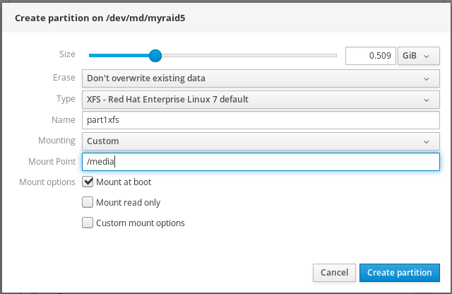
Formatting can take several minutes depending on used formatting options and size of RAID.
After successful finish, you can continue with creating other partitions.
At this point, the system uses mounted and formatted RAID.
This section shows you how to build a volume group from software RAID.
Prerequisites
- RAID device, which is not formatted and mounted.
Procedure
- Open the RHEL 8 web console.
- Click Storage.
- Click the + icon in the Volume Groups box.
- In the Create Volume Group dialog box, enter a name for the new volume group.
In the Disks list, select a RAID device.
If you do not see the RAID in the list, unmount the RAID from the system. The RAID device must not be used by the RHEL 8 system.

- Click Create.
The new volume group has been created and you can continue with creating a logical volume.
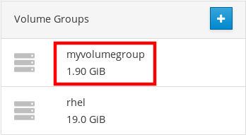
Red Hat Enterprise Linux 8 supports the LVM logical volume manager. When you install a Red Hat Enterprise Linux 8, it will be installed on LVM automatically created during the installation.
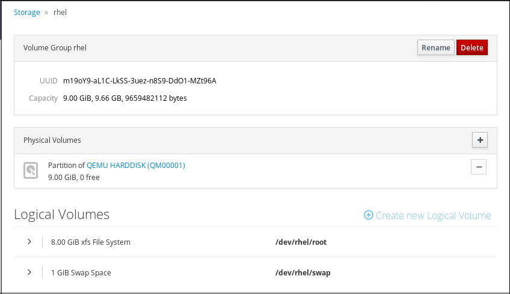
The screenshot shows you a clean installation of the RHEL 8 system with two logical volumes in the RHEL 8 web console automatically created during the installation.
To find out more about logical volumes, follow the sections describing:
- Physical drives, RAID devices, or any other type of block device from which you can create the logical volume.
The RHEL 8 web console provides a graphical interface to create LVM volume groups and logical volumes.
Volume groups create a layer between physical and logical volumes. It makes you possible to add or remove physical volumes without influencing logical volume itself. Volume groups appear as one drive with capacity consisting of capacities of all physical drives included in the group.
You can join physical drives into volume groups in the web console.
Logical volumes act as a single physical drive and it is built on top of a volume group in your system.
Main advantages of logical volumes are:
- Better flexibility than the partitioning system used on your physical drive.
- Ability to connect more physical drives into one volume.
- Possibility of expanding (growing) or reducing (shrinking) capacity of the volume on-line, without restart.
- Ability to create snapshots.
Additional resources
- For details, see Configuring and managing logical volumes.
The following describes creating volume groups from one or more physical drives or other storage devices. Logical volumes are created from volume groups.
Each volume group can include multiple logical volumes.
For details, see Volume groups.
Prerequisites
- Physical drives or other types of storage devices from which you want to create volume groups.
Procedure
- Log in to the RHEL 8 web console.
- Click Storage.
Click the + icon in the Volume Groups box.
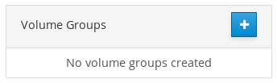
- In the Name field, enter a name of a group without spaces.
Select the drives you want to combine to create the volume group.

It might happen that you cannot see devices as you expected. The RHEL web console displays only unused block devices. Used devices means, for example:
- Devices formatted with a file system
- Physical volumes in another volume group
Physical volumes being a member of another software RAID device
If you do not see the device, format it to be empty and unused.
- Click Create.
The web console adds the volume group in the Volume Groups section. After clicking the group, you can create logical volumes that are allocated from that volume group.

The following steps describe how to create LVM logical volumes.
Prerequisites
- Volume group created. For details, see Creating volume groups in the web console.
Procedure
- Log in to the RHEL 8 web console.
- Click Storage.
- Click the volume group in which you want to create logical volumes.
- Click Create new Logical Volume.
- In the Name field, enter a name for the new logical volume without spaces.
In the Purpose drop down menu, select Block device for filesystems.
This configuration enables you to create a logical volume with the maximum volume size which is equal to the sum of the capacities of all drives included in the volume group.

Define the size of the logical volume. Consider:
- How much space the system using this logical volume will need.
- How many logical volumes you want to create.
You do not have to use the whole space. If necessary, you can grow the logical volume later.
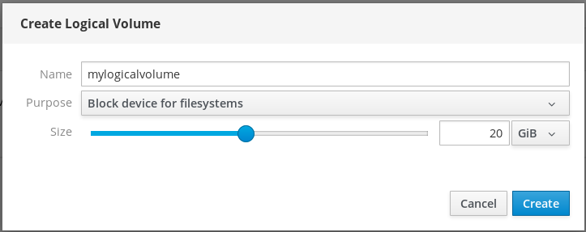
- Click Create.
To verify the settings, click your logical volume and check the details.

At this stage, the logical volume has been created and you need to create and mount a file system with the formatting process.
Logical volumes act as physical drives. To use them, you need to format them with a file system.
Warning
Formatting logical volumes will erase all data on the volume.
The file system you select determines the configuration parameters you can use for logical volumes. For example, some the XFS file system does not support shrinking volumes. For details, see Resizing logical volumes in the web console.
The following steps describe the procedure to format logical volumes.
Prerequisites
- Logical volume created. For details, see Creating volume groups in the web console.
Procedure
- Log in to the RHEL web console.
- Click Storage.
- Click the volume group in which the logical volume is placed.
- Click the logical volume.
Click on the Unrecognized Data tab.
- Click Format.
In the Erase drop down menu, select:
- Don’t overwrite existing data — the RHEL web console rewrites only the disk header. Advantage of this option is speed of formatting.
- Overwrite existing data with zeros — the RHEL web console rewrites the whole disk with zeros. This option is slower because the program have to go through the whole disk. Use this option if the disk includes any data and you need to overwrite it.
In the Type drop down menu, select a file system:
XFS file system supports large logical volumes, switching physical drives online without outage, and growing an existing file system. Leave this file system selected if you do not have a different strong preference.
XFS does not support reducing the size of a volume formatted with an XFS file system
ext4 file system supports:
- Logical volumes
- Switching physical drives online without outage
- Growing a file system
- Shrinking a file system
You can also select a version with the LUKS (Linux Unified Key Setup) encryption, which allows you to encrypt the volume with a passphrase.
- In the Name field, enter the logical volume name.
In the Mounting drop down menu, select Custom.
The Default option does not ensure that the file system will be mounted on the next boot.
- In the Mount Point field, add the mount path.
Select Mount at boot.

Click Format.
Formatting can take several minutes depending on the volume size and which formatting options are selected.
after the formatting has completed successfully, you can see the details of the formatted logical volume on the Filesystem tab.

- To use the logical volume, click Mount.
At this point, the system can use mounted and formatted logical volume.
This section describes how to resize logical volumes. You can extend or even reduce logical volumes. Whether you can resize a logical volume depends on which file system you are using. Most file systems enable you to extend (grow) the volume online (without outage).
You can also reduce (shrink) the size of logical volumes, if the logical volume contains a file system which supports shrinking. It should be available, for example, in the ext3/ext4 file systems.
Warning
You cannot reduce volumes that contains GFS2 or XFS filesystem.
Prerequisites
- Existing logical volume containing a file system which supports resizing logical volumes.
Procedure
The following steps provide the procedure for growing a logical volume without taking the volume offline:
- Log in to the RHEL web console.
- Click Storage.
- Click the volume group in which the logical volume is placed.
- Click the logical volume.
- On the Volume tab, click Grow.
In the Grow Logical Volume dialog box, adjust volume space.
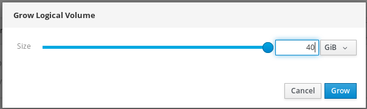
- Click Grow.
LVM grows the logical volume without system outage.
- For more details on creating logical volumes, see Configuring and managing logical volumes.
Thinly-provisioned logical volumes enables you to allocate more space for designated applications or servers than how much space logical volumes actually contain.
For details, see Thinly-provisioned logical volumes (thin volumes).
The following sections describe:
- Physical drives or other types of storage devices from which you want to create volume groups.
The following steps show you how to create a pool for thinly provisioned volumes:
Prerequisites
Procedure
- Log in to the RHEL 8 web console.
- Click Storage.
- Click the volume group in which you want to create thin volumes.
- Click Create new Logical Volume.
- In the Name field, enter a name for the new pool of thin volumes without spaces.
In the Purpose drop down menu, select Pool for thinly provisioned volumes. This configuration enables you to create the thin volume.

Define the size of the pool of thin volumes. Consider:
- How many thin volumes you will need in this pool?
- What is the expected size of each thin volume?
You do not have to use the whole space. If necessary, you can grow the pool later.
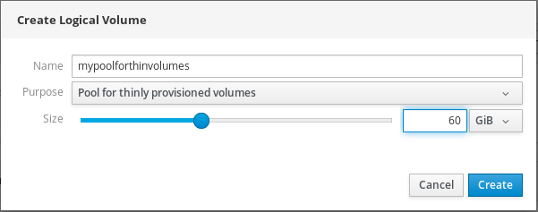
Click Create.
The pool for thin volumes has been created and you can add thin volumes.
The following text describes creating a thin logical volume in the pool. The pool can include multiple thin volumes and each thin volume can be as large as the pool for thin volumes itself.
Important
Using thin volumes requires regular checkup of actual free physical space of the logical volume.
Prerequisites
- Pool for thin volumes created. For details, see Creating volume groups in the web console.
Procedure
- Log in to the RHEL 8 web console.
- Click Storage.
- Click the volume group in which you want to create thin volumes.
- Click the desired pool.
Click Create Thin Volume.

- In the Create Thin Volume dialog box, enter a name for the thin volume without spaces.
Define the size of the thin volume.

- Click Create.
At this stage, the thin logical volume has been created and you need to format it.
Logical volumes act as physical drives. To use them, you need to format them with a file system.
Warning
Formatting logical volumes will erase all data on the volume.
The file system you select determines the configuration parameters you can use for logical volumes. For example, some the XFS file system does not support shrinking volumes. For details, see Resizing logical volumes in the web console.
The following steps describe the procedure to format logical volumes.
Prerequisites
- Logical volume created. For details, see Creating volume groups in the web console.
Procedure
- Log in to the RHEL web console.
- Click Storage.
- Click the volume group in which the logical volume is placed.
- Click the logical volume.
Click on the Unrecognized Data tab.
- Click Format.
In the Erase drop down menu, select:
- Don’t overwrite existing data — the RHEL web console rewrites only the disk header. Advantage of this option is speed of formatting.
- Overwrite existing data with zeros — the RHEL web console rewrites the whole disk with zeros. This option is slower because the program have to go through the whole disk. Use this option if the disk includes any data and you need to overwrite it.
In the Type drop down menu, select a file system:
XFS file system supports large logical volumes, switching physical drives online without outage, and growing an existing file system. Leave this file system selected if you do not have a different strong preference.
XFS does not support reducing the size of a volume formatted with an XFS file system
ext4 file system supports:
- Logical volumes
- Switching physical drives online without outage
- Growing a file system
- Shrinking a file system
You can also select a version with the LUKS (Linux Unified Key Setup) encryption, which allows you to encrypt the volume with a passphrase.
- In the Name field, enter the logical volume name.
In the Mounting drop down menu, select Custom.
The Default option does not ensure that the file system will be mounted on the next boot.
- In the Mount Point field, add the mount path.
Select Mount at boot.
Click Format.
Formatting can take several minutes depending on the volume size and which formatting options are selected.
after the formatting has completed successfully, you can see the details of the formatted logical volume on the Filesystem tab.
- To use the logical volume, click Mount.
At this point, the system can use mounted and formatted logical volume.
The following text describes how to change the drive in a volume group using the RHEL 8 web console.
The change of physical drives consists of the following procedures:
- A new physical drive for replacing the old or broken one.
- The configuration expects that physical drives are organized in a volume group.
The RHEL 8 web console enables you to add a new physical drive or other type of volume to the existing logical volume.
Prerequisites
- A volume group must be created.
- A new drive connected to the machine.
Procedure
- Log in to the RHEL 8 web console.
- Click Storage.
- In the Volume Groups box, click the volume group in which you want to add a physical volume.
In the Physical Volumes box, click the + icon.

In the Add Disks dialog box, select the preferred drive and click Add.

As a result, the RHEL 8 web console adds the physical volume. You can see it in the Physical Volumes section, and the logical volume can immediately start to write on the drive.
If a logical volume includes multiple physical drives, you can remove one of the physical drives online.
The system moves automatically all data from the drive to be removed to other drives during the removal process. Notice that it can take some time.
The web console also verifies, if there is enough space for removing the physical drive.
Prerequisites
- A volume group with more than one physical drive connected.
Procedure
The following steps describe how to remove a drive from the volume group without causing outage in the RHEL web console.
- Log in to the RHEL 8 web console.
- Click Storage.
- Click the volume group in which you have the logical volume.
- In the Physical Volumes section, locate the preferred volume.
Click the - icon.
The RHEL 8 web console verifies, if the logical volume has enough free space for removing the disk. If not, you cannot remove the disk and it is necessary to add another disk first. For details, see Adding physical drives to logical volumes in the web console.

As results, the RHEL 8 web console removes the physical volume from the created logical volume without causing an outage.
This chapter describes the Virtual Data Optimizer (VDO) configuration using the RHEL 8 web console. After reading it, you will be able to:
- Create VDO volumes
- Format VDO volumes
- Extend VDO volumes
The RHEL 8 web console is installed and accessible.
For details, see Installing the web console.
Red Hat Enterprise Linux 8 supports Virtual Data Optimizer (VDO). VDO is a block virtualization technology that combines:
- Compression
- For details, see Enabling or disabling compression in VDO.
- Deduplication
- For details, see Enabling or disabling deduplication in VDO.
- Thin provisioning
- For details, see Thinly-provisioned logical volumes (thin volumes).
Using these technologies, VDO:
- Saves storage space inline
- Compresses files
- Eliminates duplications
- Enables you to allocate more virtual space than how much the physical or logical storage provides
- Enables you to extend the virtual storage by growing
VDO can be created on top of many types of storage. In the RHEL 8 web console, you can configure VDO on top of:
LVM
Note
It is not possible to configure VDO on top of thinly-provisioned volumes.
- Physical volume
- Software RAID
For details about placement of VDO in the Storage Stack, see System Requirements.
Additional resources
- For details about VDO, see Deduplicating and compressing storage.
This section helps you to create a VDO volume in the RHEL web console.
Prerequisites
- Physical drives, LVMs, or RAID from which you want to create VDO.
Procedure
Log in to the RHEL 8 web console.
For details, see Logging in to the web console.
- Click Storage.
Click the + icon in the VDO Devices box.

- In the Name field, enter a name of a VDO volume without spaces.
- Select the drive that you want to use.
In the Logical Size bar, set up the size of the VDO volume. You can extend it more than ten times, but consider for what purpose you are creating the VDO volume:
- For active VMs or container storage, use logical size that is ten times the physical size of the volume.
- For object storage, use logical size that is three times the physical size of the volume.
For details, see Deploying VDO.
In the Index Memory bar, allocate memory for the VDO volume.
For details about VDO system requirements, see System Requirements.
Select the Compression option. This option can efficiently reduce various file formats.
For details, see Enabling or disabling compression in VDO.
Select the Deduplication option.
This option reduces the consumption of storage resources by eliminating multiple copies of duplicate blocks. For details, see Enabling or disabling deduplication in VDO.
- [Optional] If you want to use the VDO volume with applications that need a 512 bytes block size, select Use 512 Byte emulation. This reduces the performance of the VDO volume, but should be very rarely needed. If in doubt, leave it off.
Click Create.

If the process of creating the VDO volume succeeds, you can see the new VDO volume in the Storage section and format it with a file system.

VDO volumes act as physical drives. To use them, you need to format them with a file system.
Warning
Formatting VDO will erase all data on the volume.
The following steps describe the procedure to format VDO volumes.
Prerequisites
- A VDO volume is created. For details, see the section called “Creating VDO volumes in the web console”.
Procedure
Log in to the RHEL 8 web console.
For details, see Logging in to the web console.
- Click Storage.
- Click the VDO volume.
- Click on the Unrecognized Data tab.
Click Format.

In the Erase drop down menu, select:
- Don’t overwrite existing data
- The RHEL web console rewrites only the disk header. The advantage of this option is the speed of formatting.
- Overwrite existing data with zeros
- The RHEL web console rewrites the whole disk with zeros. This option is slower because the program has to go through the whole disk. Use this option if the disk includes any data and you need to rewrite them.
In the Type drop down menu, select a filesystem:
The XFS file system supports large logical volumes, switching physical drives online without outage, and growing. Leave this file system selected if you do not have a different strong preference.
XFS does not support shrinking volumes. Therefore, you will not be able to reduce volume formatted with XFS.
- The ext4 file system supports logical volumes, switching physical drives online without outage, growing, and shrinking.
You can also select a version with the LUKS (Linux Unified Key Setup) encryption, which allows you to encrypt the volume with a passphrase.
- In the Name field, enter the logical volume name.
In the Mounting drop down menu, select Custom.
The Default option does not ensure that the file system will be mounted on the next boot.
- In the Mount Point field, add the mount path.
Select Mount at boot.
Click Format.
Formatting can take several minutes depending on the used formatting options and the volume size.
After a successful finish, you can see the details of the formatted VDO volume on the Filesystem tab.

- To use the VDO volume, click Mount.
At this point, the system uses the mounted and formatted VDO volume.
This section describes extending VDO volumes in the RHEL 8 web console.
Prerequisites
- The VDO volume created.
Procedure
Log in to the RHEL 8 web console.
For details, see Logging in to the web console.
- Click Storage.
Click your VDO volume in the VDO Devices box.
- In the VDO volume details, click the Grow button.
In the Grow logical size of VDO dialog box, extend the logical size of the VDO volume.

Original size of the logical volume from the screenshot was 6 GB. As you can see, the RHEL web console enables you to grow the volume to more than ten times the size and it works correctly because of the compression and deduplication.
- Click Grow.
If the process of growing VDO succeeds, you can see the new size in the VDO volume details.